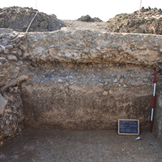

Le indagini in oggetto sono state condotte, in regime di concessione, in continuità con le prime ricerche estensive effettuate nell'estate del 2013. Lo scavo è stato eseguito dal 6 al 31 luglio 2015.
Gli scavi del 2013 avevano già messo in luce un'ampia porzione di un complesso architettonico articolato in una serie di grandi vani affiancati che circondano una vasca, denominata E, posta al centro di un'area che, probabilmente, in una prima fase doveva essere scoperta. La vasca è stata riportata alla luce nella sua interezza e si è proceduto allo scavo della metà meridionale del riempimento. Il fondo della vasca era rivestito da uno strato di malta di cocciopesto piuttosto "magra" (e pertanto poco conservata), con scarsa presenza di frammenti di laterizio, che copriva il conglomerato cementizio del fondo.
Durante la campagna 2015, inoltre, si è potuto chiarire la disposizione dei vari piani d'uso intorno alla vasca: il piano d'uso più antico risulta essere un piano di ghiaia costipata, poi inciso dalle prime strutture repubblicane. Il piano è stato individuato nell'angolo S-O dell'area di scavo.
Su questo piano sono stati individuati diversi materiali che possono fornire un orizzonte cronologico sull'utilizzo delle strutture stesse: si va da una moneta emessa da Caligola a diversi frammenti di anfore a fondo piatto, inquadrabili tra II e IV sec. d.C. Al di sotto di questo piano sono stati individuati poi dei limi di colore giallastro, facilmente interpretabili come sterile.
Tra le novità principali dello scavo 2015 si deve ricordare il rinvenimento di almeno due condotte per il "troppo pieno": la prima è collocata sul lato meridionale della vasca, all'interno del conglomerato cementizio, ed è costituita da un tubulo in terracotta lungo ca. 80 cm e con diametro di 22 cm. La seconda condotta si trova sul lato E ed è costruita, in apparenza, con meno cura: alcuni laterizi disposti di taglio e un grande coppo (lunghezza cm 58) conformano una condotta di scarico che si immette in una canaletta già individuata nel 2014. Si tratta infatti del tratto terminale della canaletta individuata al di sotto del vano A e in parte indagata l'anno scorso. Tale condotta, costruita con spallette e copertura in manubriati di dimensioni minori del solito (42 x 28 x 5), doveva condurre le acque del troppo pieno verso N, forse in direzione del pozzo individuato durante le indagini 2013.
La canaletta, messa in opera contestualmente alla vasca E, intercetta e spacca un tratto di muratura che costituisce la prova dell'esistenza di un'ulteriore fase costruttiva, non individuata prima. Si tratta di una struttura ad angolo retto, costituita da due tratti murari concatenati: una muratura con andamento N-S, larga 45 cm, e un tratto con andamento E-O. La tecnica edilizia, oltre che considerazioni stratigrafiche, ci inducono a collocare tali strutture in una fase intermedia tra le prime stanze del complesso, ascrivibili all'età repubblicana, e la grande vasca E: si tratta infatti di una muratura costruita con tegole spezzate disposte con le alette in alto e colmate con spezzoni di tegole e abbondante malta di calce. All'interno di tale struttura è stato individuato un piano d'uso, costituito da ghiaia di piccole dimensioni costipata. Tali murature sono fondate direttamente nei limi sterili: la fondazione è consistente ed è spessa ca. 60 cm.
Prima della chiusura sono stati condotti dei restauri per mettere in sicurezza alcune murature della vasca (restauratore Mirco Zaccaria).
La chiusura è avvenuta l'ultimo giorno di scavo (31 luglio) e ha previsto la protezione delle strutture e la copertura totale dell'area di scavo.
- Particolare del piano d'uso in ghiaia costipata intorno alla grande vasca
- Particolare delle murature di prima fase
- Una fase dei primi interventi di restauro
- La protezione dello scavo prima della chiusura
- La protezione dello scavo prima della chiusura
- Dettaglio del sistema di deflusso delle acque
- Particolare delle strutture precedenti il piano d'uso intorno alla vasca
 La canaletta di deflusso delle acque con la copertura
La canaletta di deflusso delle acque con la copertura La canaletta di deflusso delle acque con la copertura
La canaletta di deflusso delle acque con la copertura- Una fossa che intercetta il piano d'uso in ghiaia
- Piano d'uso e crollo delle coperture sul alto est della vasca
- Il fondo in cocciopesto della vasca
- Il primo strato di riempimento della vasca
- Panoramica della grande vasca
- La parete ovest della vasca
- Dettaglio della parete est della vasca
- Panoramica dell'angolo sud-est dello scavo
- Particolare del riempimento della grande vasca
- La canaletta al momento della scoperta
- L'area di scavo dopo la chiusura


{kind=link}
{kind=link}
{kind=link}
{kind=link}
{kind=link}
{kind=link}
{kind=link}
{kind=link}
{kind=link}
{kind=link}
{kind=link}
{kind=link}
{kind=link}
{kind=link}
{kind=link}
{kind=link}
{kind=link}
{kind=link}